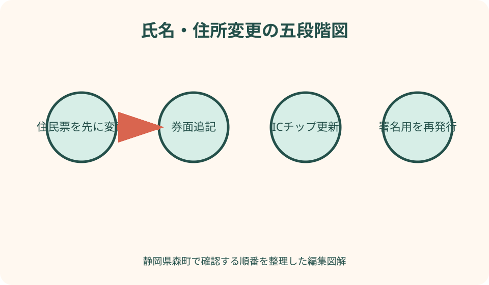
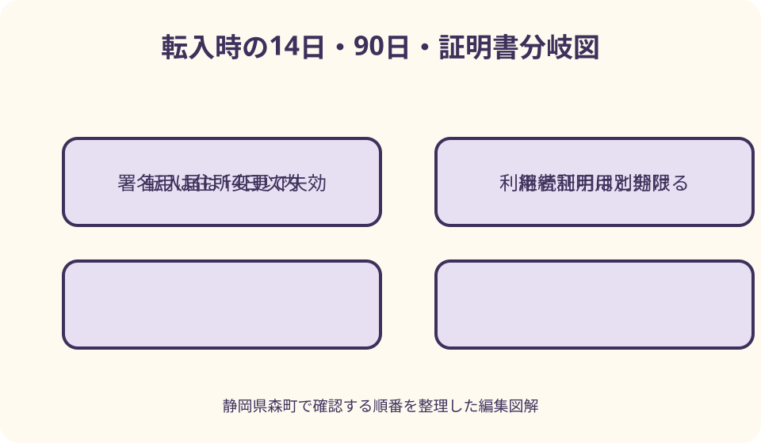

行政手続・証明書｜最終確認 2026-08-10
静岡県森町でマイナンバーカードの氏名・住所を変更する｜券面追記と電子証明書の確認
マイナンバーカードの氏名・住所変更は、カード表面へ新しい情報を書き足すだけではありません。先に住民票や戸籍の届出を行い、カード券面とICチップを変更し、住所・氏名変更で失効した署名用電子証明書を必要に応じて再発行します。森町への転入、町内転居、婚姻等による氏名変更を分け、暗証番号と期限も別に確認します。

編集イラスト住民票の変更が先、カード処理はその後
カードへ新住所や新氏名を追記する前に、住民票へ正しい内容が記録されている必要があります。森町外から入る人は転入届、森町内で移る人は転居届、婚姻・離婚等で氏名が変わる人は該当する戸籍届と住民票反映を確認します。カードだけを書き換える申請ではありません。
引越しの賃貸契約日や鍵受取日ではなく、実際に新住所へ住み始めた日が住民異動の基準になります。転入・転居は森町公式で引越し後十四日以内とされています。予定変更があった場合は、申請書の日付を推測せず、実際の居住開始日を窓口へ伝えます。
婚姻届を夜間・休日に提出した場合、その場でマイナンバーカードの氏名変更まで処理できるとは限りません。戸籍届の受理と住民票への反映、カード窓口の開庁を分けます。婚姻日当日に新氏名のカードが完成する前提で、銀行や勤務先の予定を組まないようにします。
転出する人は、森町で旧住所を新住所へ追記するのではなく、新住所地で転入届とカード継続利用を行います。森町への転入者は前住所地の転出証明情報をつなぎ、森町役場で住所変更を完了します。どの自治体が最終的な券面処理を行うかを確認します。
券面追記とICチップ更新を別々に確認する
氏名や住所が変わると、カード表面の追記欄へ新しい情報を記載する処理が必要です。表面に古い住所が印刷されたままでも、追記欄を含めて現在の情報を示すカードになります。自分で住所を書き足したり、シールを貼ったりしてはいけません。
見える券面だけでなく、ICチップ内の記録も変更します。窓口では住民基本台帳用暗証番号など数字四桁を求められることがあります。カードを忘れた、暗証番号が不明、ロックしている場合は、住民異動届とカード処理を同日に完了できない可能性があります。
追記欄が過去の変更で埋まっている場合は、単純な追記ではなくカード再交付が必要になることがあります。新しいカードが届くまでの期間、旧カードの利用、電子証明書、手数料の扱いを森町へ確認します。欄が狭いから自分で古い記載を消すことは避けます。
2026年5月以降は、条件を満たす人が氏名の振り仮名、ローマ字氏名、西暦生年月日の追記を申し出られる国の案内もあります。住所・氏名変更と自動で同時記載されるとは限りません。希望する場合は住民票・戸籍の振り仮名記載状況を森町へ確認します。
署名用電子証明書は氏名・住所変更で失効する
署名用電子証明書には氏名、住所、生年月日、性別が記録されています。住民票の氏名や住所が変わると証明書内の情報と一致しなくなるため、署名用は失効します。カード表面へ新住所を追記しただけでは、以前の署名用電子証明書が復活するわけではありません。
e-Tax、電子申請、オンライン契約など電子文書へ署名する予定がある人は、新しい署名用電子証明書の発行を森町窓口で確認します。再発行時は英数字6〜16文字の暗証番号を設定または入力します。数字四桁と取り違えないようにします。
利用者証明用電子証明書には基本四情報が記録されないため、住所・氏名変更という理由だけでは失効しません。マイナポータルへログインできるのに、申請送信時だけエラーになる場合、利用者証明用は有効で署名用が失効している可能性があります。
署名用が不要な人も、将来オンライン手続を使う可能性を考えて発行希望を確認します。顔認証マイナンバーカードには署名用を搭載できないため、カード種類によって選択肢が異なります。健康保険証利用ができることを、電子署名もできる根拠にしません。

森町内の転居は転居届とカード全員分を確認する
森町内で住所を移した人は、住み始めてから十四日以内に転居届を窓口へ提出します。森町公式は、所有者のマイナンバーカードまたは住民基本台帳カード、外国人住民の在留カード、保険関係書類などを持ち物として案内しています。
世帯で引越す場合、カード保有者全員分を持参するかを確認します。一人のカードだけ住所変更し、配偶者や子どものカードが旧住所のまま残らないよう一覧を作ります。15歳未満では署名用の搭載状況が大人と異なるため、同じ処理だと決めつけません。
転居届はマイナポータルから来庁予約できますが、届出とカード変更は森町役場の窓口で行います。予約送信を住所変更完了とみなさず、来庁日にカードと暗証番号を準備します。システムの予約状況も当日に確認します。
転居後も森町の印鑑登録証はそのまま使えるという町の案内があります。一方、国保、介護等の書類には住所変更が必要なものがあります。カード券面処理と各制度の証書変更を同じ窓口で自動完了すると考えず、対象者ごとに確認します。
森町への転入は14日と90日の期限を分ける
森町外から転入した人は、実際に住み始めてから十四日以内に転入届を行います。前住所地の転出証明書、特例転出や引越しワンストップならカード等、本人確認書類を準備します。オンラインで転入予約をしても窓口届出は必要です。
カードの継続利用は転入届と同時に行うのが分かりやすいですが、森町公式は転入手続後九十日以内に継続利用しないとカードが失効すると案内しています。この九十日だけを見て、転入届の十四日期限を延ばせると考えてはいけません。
転入時には券面へ森町の新住所を追記し、ICチップ記録を更新します。署名用電子証明書は前住所から変わった時点で失効するため、新規発行を確認します。利用者証明用のログインだけ試して、すべて正常と判断しないようにします。
代理人が転入届とカードを持参した場合、カード継続利用や署名用の発行を即日できないことがあります。森町は、代理関係によって本人の後日来庁または照会回答書の郵送を案内しています。代理届出の完了日とカード処理の完了日を別に記録します。
婚姻・離婚等の氏名変更は届出反映を確認する
婚姻、離婚、養子縁組などで氏名が変わる場合、まず戸籍届が受理され、住民票の氏名へ反映される必要があります。森町へ戸籍届を出したのか、他自治体へ出したのか、本籍地と住所地がどこかで反映時間が異なる場合があります。カード窓口へ行く日を確認します。
新氏名はカード追記欄へ記載され、ICチップ内の情報も変更されます。旧姓の併記を希望する場合は、先に住民票へ旧氏を記載する手続が必要です。婚姻による新氏名変更と旧氏併記を同じ申請だと思わず、必要書類を森町へ尋ねます。
氏名変更で署名用電子証明書は失効します。新氏名で電子申請や銀行等のオンライン本人確認をするなら、署名用を再発行してから利用します。旧氏名の署名用暗証番号を入力し続けても、新しい氏名情報へ更新されません。
勤務先、銀行、保険、運転免許、旅券などの氏名変更は、マイナンバーカード変更だけで自動的に連携されるとは限りません。提出先ごとに新氏名カードを本人確認へ使える時期、戸籍証明が必要か、旧氏名口座の扱いを確認します。
良い点
住所・氏名変更を五つの処理へ分ける良い点は、窓口へ行ったのにオンライン申請だけ使えない理由を追いやすいことです。住民票、券面、ICチップ、署名用、関連制度の完了欄を作れば、何が残っているか分かります。
転入時の十四日と九十日を別々に管理すれば、カード失効のリスクを減らせます。引越し直後にカードを忘れた場合も、転入届を先に行い、カード継続利用の再来庁日をその場で決められます。期限を一つの『引越し手続』へまとめません。
署名用と利用者証明用の差を知ると、必要な再発行だけを説明できます。ログインできるが送信できない場面で、カード全体を再交付する必要があると早合点しません。森町窓口へ住所変更後の署名用再発行を具体的に相談できます。
家族全員分のカードを一覧にすると、子どもや高齢者のカードだけ旧住所のまま残ることを防げます。本人来庁、同一世帯員による処理、代理照会が必要な人を分け、暗証番号を共有せずに手伝えます。
注文したい点
注文したいのは、住所変更という日常語の中に、住民票、券面追記、ICチップ、カード継続利用、署名用再発行が重なっている点です。森町公式の転入・転居ページに、処理ごとの完了確認欄があれば、住民は窓口を出る前に残作業を確認できます。
婚姻等の氏名変更では、戸籍届の受付時間とカード窓口の時間が異なります。夜間届出からカード変更までの目安、住民票反映をどこで確認するかが一つの案内にまとまると、翌日の勤務先手続を組みやすくなります。
代理人手続は、住民異動、券面変更、署名用再発行で条件が変わります。委任状一枚で全て終わる印象を避け、本人・同一世帯員・その他代理人ごとに、即日可、照会後、本人限定という違いを表示してほしいところです。
カード追記欄が満欄の場合の再交付も、引越し当日に初めて分かると負担になります。追記欄の空き、発行までの期間、旧カードの機能、電子証明書を使えない期間を事前に自己確認できる写真例や説明があると安心です。

暗証番号は処理ごとの役割を確認する
カード券面・ICチップの住所変更では、住民基本台帳用の数字四桁を使うことがあります。利用者証明用、券面事項入力補助用と同じ四桁を設定した人も、別の番号にした人もいます。『普段コンビニで使う四桁』と必ず同じだとは限りません。
署名用電子証明書を再発行する場合は、英数字6〜16文字の暗証番号を設定します。四桁欄へ英数字を入れたり、署名用欄へ生年月日の四桁を入れたりしないよう、窓口で番号種類を復唱します。番号そのものを家族へ読み上げません。
暗証番号を忘れた、ロックした場合は、住所変更と同時に再設定できるか確認します。推測で入力を続けると、四桁系は三回、署名用は五回の連続誤入力でロックします。本人確認書類や代理条件が追加される可能性もあります。
代理人がカードを持参するときは、暗証番号を書いた紙をカードと同じ袋へ入れません。森町が照会回答書の封かん方式を案内する場合は、本人が記入し、代理人が開けずに持参します。家族だから自由に入力できるとは考えません。
カード本体と電子証明書の期限を分ける
氏名・住所変更の期限と、カード本体の有効期限、電子証明書の有効期限は別です。住所変更は変更後十四日以内の手続が基本で、カード本体は券面の満了日、電子証明書は通知や窓口で確認します。一番遅い期限へまとめません。
カード本体の期限が近い時期に引越す場合、旧カードへ新住所を追記した直後に更新申請が必要になることがあります。更新可能期間、新カードの受取自治体、住所変更を先に行うかを森町へ相談します。転出前後に交付通知が届くと受取先の調整が必要です。
電子証明書の期限が切れている場合、住所変更による署名用失効とは別に更新・再発行が必要です。利用者証明用も期限切れならマイナポータルやコンビニ交付が使えません。窓口で二種類の有効性を確認します。
カードの追記欄満欄による再交付では、新カードが届くまでの本人確認と電子サービス利用を確認します。マイナ免許証として使っている人は、免許情報の引継ぎ条件も警察・国の公式案内へ戻ります。町の住所変更だけで免許手続まで保証されません。
代理人ができる範囲を一括りにしない
同一世帯員が転入・転居届を出せる場合でも、署名用電子証明書の再発行条件は別です。森町の転入案内は、同一世帯や法定代理人であっても委任状等の条件を示し、それ以外の代理人は照会回答書により後日処理する流れを案内しています。
本人が病気、施設入所、仕事等で来庁できない場合は、住民異動届、カード券面、署名用再発行のどれを代理したいか伝えます。『カードの住所変更全部』では窓口が必要な代理権を判断できません。本人の状況と代理人関係も説明します。
15歳未満の子どもや成年被後見人では法定代理人が関与しますが、署名用電子証明書の搭載自体が大人と異なる場合があります。子どものカードへ英数字を設定する前提で委任状を作らず、年齢とカード機能を確認します。
代理人が持ち帰ったカードは、本人へ券面の新氏名・新住所、署名用再発行の有無、次の期限を説明します。暗証番号を本人へ返すという管理ではなく、本人が封かんや入力を行った状態を守ります。未完了手続は期限と次回来庁者を決めます。
代案・結論
引越し後十四日以内にカードを用意できない場合は、住民異動届を先に行えるか森町へ相談し、カード処理の再来庁日を決めます。カードを紛失しているなら、住所変更ではなく一時停止・再交付の手続が先です。見つかるまで期限を放置しません。
婚姻届を他自治体へ出し、森町の住民票へ新氏名がまだ反映されていない場合は、窓口で待ち時間や再来庁の要否を確認します。旧氏名のカードへ自分で新氏名を書かず、受理証明や戸籍証明を取れば即時変更できると決めつけません。
署名用再発行が当日できない場合、e-Tax等の提出先へ紙や窓口の代替手段を確認します。利用者証明用でログインできることを期限内提出の保証にせず、送信段階まで必要な証明書を確認します。
結論として、住民票届出、券面・ICチップ、署名用再発行、暗証番号、期限の五項目を順に確認します。転入は十四日とカード継続利用九十日を分け、転居・氏名変更は変更後十四日を意識します。カードを持って森町窓口で完了項目を復唱してください。
大石の視点
大石の視点では、引越しの手続表へ『マイナンバーカード』と一行だけ書かないことが大切です。住民票、券面、署名用、家族分という四行へ分けると、役場へ行った後にオンライン申請だけ止まる状況を減らせます。
森町の山間部から町役場へ再訪する負担は小さくありません。三倉・天方方面などから向かう人は、家族全員分のカード、暗証番号状態、追記欄の空き、代理条件を電話で確認します。移動前の五分の確認が一往復を減らします。
家族が住所変更を助けるときも、カードと暗証番号を丸ごと預かることを標準にしません。本人が窓口へ行けるなら入力を任せ、代理なら町指定の封かん方法を使います。支援は期限と持ち物の整理に集中できます。
変更後に残す記録は、新住所や新氏名が券面へ反映された日、署名用を再発行した日、次の期限です。暗証番号そのものやカード裏面の写真を家族共有へ残す必要はありません。必要な事実だけを次回へ引き継ぎます。
来庁前に作る家族別チェック表
一列目に氏名、旧住所・旧氏名、新住所・新氏名、変更日を書きます。二列目に転入、転居、婚姻等の届出種類と受理状況を書きます。住民票へまだ反映されていない人を、カード変更済みとして扱いません。
三列目にカードの有無、券面期限、追記欄の空き、暗証番号を把握しているかを書きます。番号そのものは記載しません。紛失、ロック、期限切れなら通常の住所変更へ追加手続が必要なことが分かります。
四列目に券面追記、ICチップ更新、カード継続利用、署名用再発行、利用者証明用期限を置きます。家族一人ずつ完了日を記入します。子どもや顔認証カードでは対象外の項目を『不要と窓口確認』と残します。
五列目に国保、介護、こども医療、在留カード、学校、運転免許等の関連手続を書きます。カード変更で自動連携されると思わず、担当窓口と期限を分けます。家族全員に関係しない項目は削除します。
窓口を出る前の最終確認
窓口では、住民票の新住所・新氏名とカード券面の追記を見比べます。部屋番号、方書、文字の字体、旧氏併記、外国人住民の通称等に誤りがないか確認します。気付いた点を後から自分で直さず、その場で職員へ伝えます。
ICチップ処理について、カード継続利用が完了したか、住民基本台帳用暗証番号がロックしていないかを確認します。転入者は継続利用期限が残っているから後回しにせず、可能なら同日に完了させます。
署名用電子証明書は再発行されたか、英数字暗証番号を本人が設定したか、利用者証明用の期限は残っているかを聞きます。ログインと電子署名の両方を使う人は、二つの証明書を別々に確認します。
最後に、反映まで時間がかかるサービス、次回来庁、受け取る通知、関連制度をメモします。コンビニ交付やオンライン申請を当日すぐ使えると断定せず、各公式案内で利用開始を確認します。これで氏名・住所変更を生活上の利用へつなげられます。
公式情報・確認先
掲載内容は次の一次情報を基礎に整理しました。営業、料金、催し、交通は変わるため、出発前または手続き前にリンク先で最新情報を確認してください。
- 転入届（静岡県森町、2026-08-10確認）
- 転居届（静岡県森町、2026-08-10確認）
- 戸籍・住民異動に関する届出（静岡県森町、2026-08-10確認）
- マイナンバーカードの記載内容に変更があったときは、どうすれば良いですか（地方公共団体情報システム機構（マイナンバーカード総合サイト）、2026-08-10確認）
- 電子証明書に関するご質問（公的個人認証サービス ポータルサイト、2026-08-10確認）
- マイナンバーカードへの氏名の振り仮名等の記載について（地方公共団体情報システム機構（マイナンバーカード総合サイト）、2026-08-10確認）